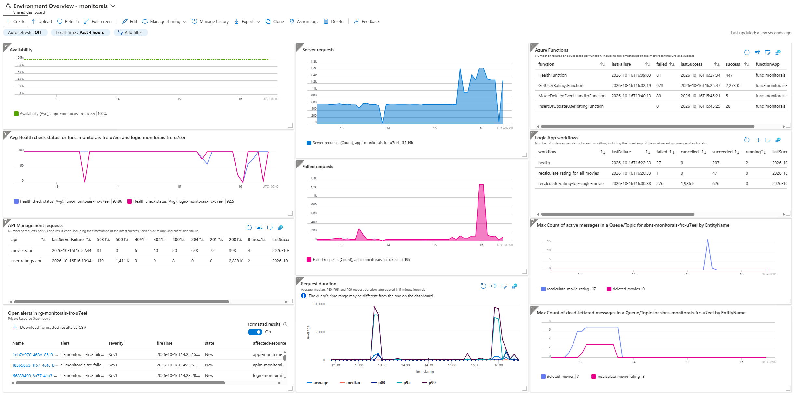
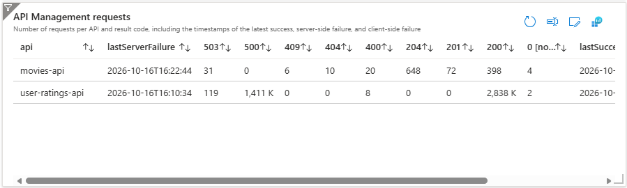
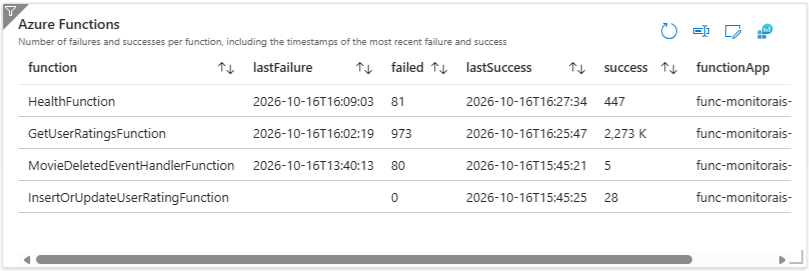
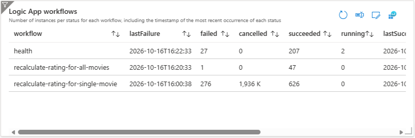
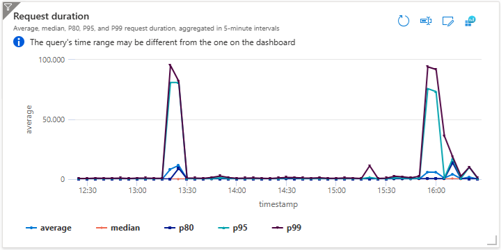

Monitoring Azure Integrations with a Dashboard

When I start working on a new Azure Integration Services project, one of the first things I do is make sure I can monitor it. The integrations I’ve worked on often include API Management, Azure Functions, Logic App workflows and Azure Service Bus. Looking across those services individually makes it harder to get a quick sense of the health of the integrations.
I usually start with an Azure dashboard that brings the signals I care about into one view. In this post, I’ll walk through a sample dashboard, the queries behind some of its tiles and how I prepare the dashboard for deployment to multiple environments.
This is the first post in my Monitoring Azure Integration Services series.
Table of Contents
- Sample Template
- Environment Overview Dashboard
- Queries Behind the Dashboard
- Editing the Dashboard
- Deploying the Dashboard with Bicep
- Considerations
- Conclusion
Sample Template
I’ve created an Azure Developer CLI (azd) template called Monitor Azure Integration Services to demonstrate different monitoring approaches for Azure Integration Services, including dashboards, workbooks, health checks, alerts and health models. The dashboard featured in this post is included in the template. It has a sample application that lets users manage movies and submit or update ratings. It uses API Management, Azure Functions, Logic App workflows and Azure Service Bus. If you’d like to deploy and try the solution, follow the template’s getting started instructions.
Environment Overview Dashboard
The dashboard is intended to give me a quick overview of the integration health in an environment, not to replace the detailed monitoring views in each service. I include a mixture of availability and health information, request activity, workflow status, function results, alerts and messaging metrics.
The sample dashboard looks like this:

The dashboard in the sample template includes:
- Availability test results and health check status for the Function App and Logic App.
- API Management requests, grouped by API and response code.
- Request counts, failed requests and request duration percentiles from Application Insights.
- Azure Functions success and failure counts, with the latest success and failure times.
- Logic App workflow run counts and their latest success or failure times.
- Open alerts in the resource group.
- Active and dead-letter message counts for the Service Bus entities.
I usually adjust the dashboard for each project. If the environment has an Application Gateway with a web application firewall, I might add a tile showing blocked requests. If it uses storage queues instead of Service Bus, I show the relevant queue metrics instead.
In the sample template, I use an availability test to check the uptime of API Management. For more on those, see my Track Availability in App Insights series.
Queries Behind the Dashboard
Some tiles use metrics directly, while others use queries over Application Insights data. These examples show the queries I use for API Management requests, Azure Functions, Logic App workflows and request duration.
API Management Requests
The dashboard shows request counts by API and response code, alongside the latest success and failure times.

This query groups requests by API and response code. I separate client failures from other failures because client failures don’t usually require the same response from my team. Sorting by the latest server failure helps me spot APIs with recent server-side errors.
let requestSummary = requests
| where customDimensions["Service Type"] == "API Management"
| extend api = tostring(customDimensions["API Name"])
| extend isClientFailure = success == false and toint(resultCode) between (400 .. 499)
| extend isServerFailure = success == false and isClientFailure == false
| summarize
lastClientFailure = maxif(timestamp, isClientFailure),
lastServerFailure = maxif(timestamp, isServerFailure),
lastSuccess = maxif(timestamp, success == true)
by api;
requests
| where customDimensions["Service Type"] == "API Management"
| extend api = tostring(customDimensions["API Name"])
| evaluate pivot(resultCode, count(), api)
| join kind=leftouter requestSummary on api
| project-away api1
| project-reorder api, lastServerFailure, * desc, lastSuccess, lastClientFailure
| sort by lastServerFailure desc, api asc
The evaluate pivot(resultCode, count(), api) step turns distinct response codes into columns, with request counts per API. The leftouter join brings in the summary timestamps while keeping every API from the pivot result. The join introduces a duplicate API key column called api1, which project-away api1 removes.
The project-reorder step puts api and lastServerFailure first, orders the response-code count columns by column name in descending order and places lastSuccess and lastClientFailure at the end. This makes the table easier to scan, with the latest server failure next to each API and higher response codes before lower ones, because I care most about errors.
Azure Functions
The dashboard shows success and failure counts for each function, along with the latest success and failure times.

This query summarizes successes and failures per function and function app.
requests
| where customDimensions["faas.name"] != ""
| extend function = tostring(customDimensions["faas.name"])
| summarize
success = countif(success == true),
lastSuccess = maxif(timestamp, success == true),
failed = countif(success == false),
lastFailure = maxif(timestamp, success == false)
by function, cloud_RoleName
| project
function,
lastFailure,
failed,
lastSuccess,
success,
functionApp = cloud_RoleName
| sort by lastFailure desc, function asc
The query is based on OpenTelemetry logging. My Migrate Azure Functions project from Application Insights to OpenTelemetry gist includes an example query for the older Application Insights logging and another that combines both.
Logic App Workflows
The dashboard shows workflow run counts by status and the latest success, failure and cancellation times.

The workflow query joins workflow start and end events to determine the run status, using both operation_Id and runId to match events for a workflow run.
let runEvents = traces
| extend category = tostring(customDimensions["Category"])
| where category == "Workflow.Operations.Runs"
| extend eventName = tostring(customDimensions["EventName"])
| extend runId = tostring(parse_json(tostring(customDimensions["resource"]))["runId"]);
runEvents
| where eventName == "WorkflowRunStart"
| join kind=leftouter (
runEvents
| where eventName == "WorkflowRunEnd"
) on operation_Id, runId
| extend status = iif(
isempty(customDimensions1["status"]),
"Running",
replace_string(tostring(customDimensions1["status"]), @'"', '')
)
| summarize
succeeded = countif(status == "Succeeded"),
lastSucceeded = maxif(timestamp1, status == "Succeeded"),
failed = countif(status == "Failed"),
lastFailure = maxif(timestamp1, status == "Failed"),
cancelled = countif(status == "Cancelled"),
lastCancelled = maxif(timestamp1, status == "Cancelled"),
running = countif(status == "Running")
by operation_Name, cloud_RoleName
| sort by lastFailure desc, operation_Name asc
| project
workflow = operation_Name,
lastFailure,
failed,
cancelled,
succeeded,
running,
lastSucceeded,
lastCancelled,
logicApp = cloud_RoleName
The query first selects all workflow run events, and extracts the event name and run ID from custom dimensions. It takes the start events and uses a left outer join to match each one to an end event. A start event without a matching end event has no end status, so the query treats it as Running. It then groups runs by workflow and Logic App, counts each status and finds the latest success, failure and cancellation times from the end-event timestamps.
The query requires enhanced telemetry to be enabled for the Logic App. To enable it, set Runtime.ApplicationInsightTelemetryVersion to v2 in your Logic App’s host.json:
{
"version": "2.0",
"extensionBundle": {
"id": "Microsoft.Azure.Functions.ExtensionBundle.Workflows",
"version": "[1, 2.00]"
},
"extensions": {
"workflow": {
"Settings": {
"Runtime.ApplicationInsightTelemetryVersion": "v2",
"Runtime.ApplicationInsights.PreserveIncomingOperationId": "true"
}
}
}
}
Setting Runtime.ApplicationInsights.PreserveIncomingOperationId to true preserves the incoming operation ID so workflow telemetry can be correlated with related telemetry. But because of this configuration, operation_Id alone doesn’t always identify a specific workflow run, so the query extracts runId from the resource custom dimension and joins on both operation_Id and runId.
Request Duration
The dashboard plots average, median and 80th, 95th and 99th percentile request durations in five-minute intervals.

This query calculates average, median and percentile durations in five-minute intervals. I use percentiles to see how slower requests compare with the typical request.
requests
| summarize
average = avg(duration),
median = percentile(duration, 50),
p80 = percentile(duration, 80),
p95 = percentile(duration, 95),
p99 = percentile(duration, 99)
by bin(timestamp, 5m)
| render timechart
Editing the Dashboard
I usually build up a dashboard by pinning useful charts and queries from the Azure portal to a dashboard. For example, you can configure a metric on a service’s Metrics page of a resource and pin it, or create a query in Application Insights or Log Analytics and pin its results. You can also add tiles directly from the dashboard.
Some tiles use the time range selected on the dashboard, while others retain the time range from their source when they’re pinned. To make a tile follow the dashboard’s time range, open its ... menu, select Configure tile settings and clear Override the dashboard time settings at the tile level. This is also where you can set a tile title and subtitle.
For an Azure Resource Graph tile (used to display alerts in the sample), the Pin to dashboard or Update pinned part on dashboard action is above the Results table. It took me a while to find it because it’s in a different place from the pinning controls on other screens. This tile also doesn’t have a Customize button like some other dashboard tiles. To edit the query later, you click on the tile itself.
Some metrics can be split by resource or entity. For example, an availability test metric can show a separate line for each test. The App Service health check status metric doesn’t support splitting on resource, so you need to add each Function App and Logic App to the tile separately.
Deploying the Dashboard with Bicep
Once you’re happy with the dashboard and it’s ready to deploy, select Export and download its definition. Then copy the JSON definition into the Bicep file you use to deploy the dashboard. The Bicep extension for Visual Studio Code automatically converts the JSON into Bicep.
Before deploying to multiple environments, the environment-specific values in the dashboard definition need to be replaced. The sample template repository includes a PowerShell script that replaces hard-coded values. If the sample template has been deployed, you can run it with azd exec, which supplies values from the current azd environment:
azd exec ./scripts/replace-dashboard-hardcoded-values.ps1
Alternatively, you can run the script directly and provide the required parameters. To adapt it for another dashboard, you update the $replacements variable with the resource values that need replacing. The $dashboardReplacements variable contains values specific to the sample dashboard, such as its title.
The Bicep module used by the sample is environment-overview-dashboard.bicep.
Considerations
Queries over Application Insights data can show incomplete results when telemetry is sampled. You can check the retained percentage with this query:
union requests, dependencies, pageViews, browserTimings, exceptions, traces
| where timestamp > ago(1d)
| summarize RetainedPercentage = 100 / avg(itemCount)
by bin(timestamp, 1h), itemType
If sampling affects the results you need, you can use metrics instead or review the sampling configuration.
Conclusion
An Azure dashboard gives me a quick overview of an integration environment without having to open each service separately. By combining service metrics with Application Insights queries, you can see request activity, failures, health and other signals in one place. Exporting the dashboard and replacing environment-specific values lets you deploy the same overview across environments.
Dashboards are useful for a quick overview, but someone needs to be looking at them to notice issues. Alerts can notify the right people when something needs attention without requiring them to keep the dashboard open. I’ll cover alerts in a future post in this series.
Azure Workbooks provide more control over interactive reports than dashboards. I cover workbook techniques in Azure Workbook Tips & Tricks. In future posts in this series, I’ll explore some workbooks I’ve created for Azure Integration Services.